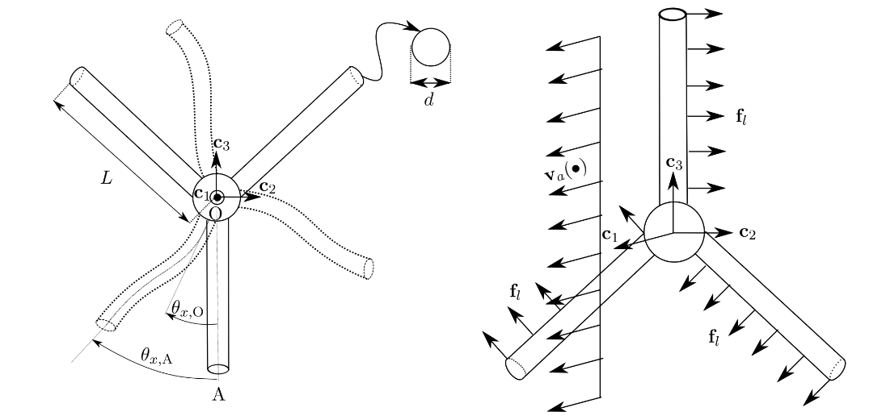

Simple Propeller example
In this example a simple propeller problem, inspired in an example this article, is considered.
close all;
if ~strcmp(getenv('TESTS_RUN'), 'yes')
clear all;Problem definition
The propeller has three blades with circular cross section and a uniform constant fluid flow is assumed as shown in the figure. Only lift is considered.
The wind velocity is assumed constant and uniform, given by the function windVel.m with one argument (time), located in the same folder. Then the fluid velocity is computed as:
va = feval('windVel', 0, 0);The density and kinematic viscosity are set:
rhoA = 1.225;
nuA = 1.6e-5;The blades are considered to have only lift, with a lift coefficient given by the function liftCoef.m placed in the same folder.
c_l = feval('liftCoef', 0);The material parameters of the blades correspond to steel with Young modulus, Poisson coefficient and density given by:
E = 210e9;
nu = 0.3;
rho = 6000;and the geometric parameters of the blades for length and diameter are set as:
l = 3;
d = 0.1;Analytical solution
Since only lift is considered, an analytical solution can be computed. The the lift load per unit of length is obtained as:
fl = 1 / 2 * c_l * rhoA * norm(va)^2 * d;the total moment $M_x$ in node 1 is given by the sum of the moments for the three blades:
moment1x = 3 * fl * l * l / 2;and then the angular moment is:
bladeMass = rho * l * pi * d^2 / 4;
Jrho = 3 * 1 / 3 * bladeMass * l^2;Then, integrating, the angle $\theta_x$ can be obtained as a function of time.
angleXnode1 = @(t) moment1x / Jrho / 2 * t.^2;If the blades are considered stiff enough and only lift is considered, this rigid-rotation solution can be used to verify the numerical solution.
Numerical solution
Set the material parameters:
materials = struct();
materials.modelName = 'elastic-rotEngStr';
materials.modelParams = [E nu];
materials.density = rho;elements
The elements are given by: nodes
elements = struct();
elements(1).elemType = 'node';frame elements for modelling the blades
elements(2).elemType = 'frame';
elements(2).elemCrossSecParams = {'circle'; d };
elements(2).massMatType = 'consistent';with the definition of the aerodynamic forces
elements(2).aeroCoefFunctions = {@(beta, Re) 0, 'liftCoef', @(beta, Re) 0};and a auxiliar truss element for the pole
elements(3).elemType = 'truss';
elements(3).elemCrossSecParams = {'circle'; 1.5 * d };
elements(3).massMatType = 'lumped';boundary Conditions
The only boundary condition is the one of the center node, with all the dofs fixed except for the rotation $\theta_x$
boundaryConditions = struct();
boundaryConds(1).imposDispDofs = [1 3 4 5 6];
boundaryConds(1).imposDispVals = [0 0 0 0 0];mesh
The mesh is defined
mesh = struct();
mesh.nodesCoords = [0 0 0; ...
0 l * sin(pi) l * cos(pi); ...
0 l * sin(pi / 3) l * cos(pi / 3); ...
0 l * sin(4 * pi / 3) -l * cos(4 * pi / 3); ...
-d * .75 0 d; ...
-d * .75 0 -l * 1.5];And a simple connectivity is required since only one frame element is used for each blade
mesh.conecCell = { };
mesh.conecCell{ 1, 1 } = [0 1 1 1];
mesh.conecCell{ 2, 1 } = [1 2 0 1 2];
mesh.conecCell{ 3, 1 } = [1 2 0 1 3];
mesh.conecCell{ 4, 1 } = [1 2 0 1 4];These are auxiliar elements (nodes and truss) used to model the pole
mesh.conecCell{ 5, 1 } = [0 1 1 5];
mesh.conecCell{ 6, 1 } = [0 1 1 6];
mesh.conecCell{ 7, 1 } = [1 3 0 5 6];initial Conditions
homogeneous initial conditions are considered, then an empty struct is set:
initialConds = struct();analysisSettings
The analysis settings are set
analysisSettings = struct();
analysisSettings.finalTime = 400;
analysisSettings.deltaT = 5;
analysisSettings.methodName = 'alphaHHT';
analysisSettings.stopTolIts = 50;
analysisSettings.geometricNonLinearAero = true;
analysisSettings.stopTolDeltau = 0;
analysisSettings.stopTolForces = 1e-5;
analysisSettings.fluidProps = { rhoA; nuA; 'windVel' };otherParams
otherParams = struct();
otherParams.problemName = 'simplePropeller';
otherParams.plots_format = 'vtk';Run ONSAS
[modelCurrSol, modelProperties, BCsData] = initONSAS(materials, elements, boundaryConds, initialConds, mesh, analysisSettings, otherParams);After that the structs are used to perform the numerical time analysis
[matUs, loadFactorsMat, modelSolutions] = solveONSAS(modelCurrSol, modelProperties, BCsData);Verification
numerical time vector is given by:
timeVec = linspace(0, analysisSettings.finalTime, size(matUs, 2));numerical rotation is obtained from the ONSAS matUs:
dofAngleXnode1 = 2;
angleXnode1Numeric = -matUs(dofAngleXnode1, :);The analytic rotation is:
angleXnode1Analytic = angleXnode1(timeVec);and the norm of the difference is computed and the test is verified
verifBoolean = norm(angleXnode1Numeric - angleXnode1Analytic) < (norm(angleXnode1Analytic) * 5e-2);Plots
lw = 2.0;
ms = 10;
plotfontsize = 22;
spanPlotTime = 2;
fig1 = figure;
plot(timeVec(1:spanPlotTime:end), angleXnode1Analytic(1:spanPlotTime:end), 'b-x', 'linewidth', lw, 'markersize', ms);
hold on;
grid on;
plot(timeVec(1:spanPlotTime:end), angleXnode1Numeric(1:spanPlotTime:end), 'ko', 'linewidth', lw, 'markersize', ms);
labx = xlabel('time(s)');
laby = ylabel('\theta_x node 1');
legend('analytic', 'numeric', 'location', 'North');
set(gca, 'linewidth', 1.2, 'fontsize', plotfontsize);
set(labx, 'FontSize', plotfontsize);
set(laby, 'FontSize', plotfontsize);
title('simple propeller test');
if length(getenv('TESTS_RUN')) > 0 && strcmp(getenv('TESTS_RUN'), 'yes')
fprintf('\ngenerating output png for docs.\n');
print(fig1, 'output/verifPropeller.png', '-dpng');
else
fprintf('\n === NOT in docs workflow. ===\n');
endThe obtained simulation is: